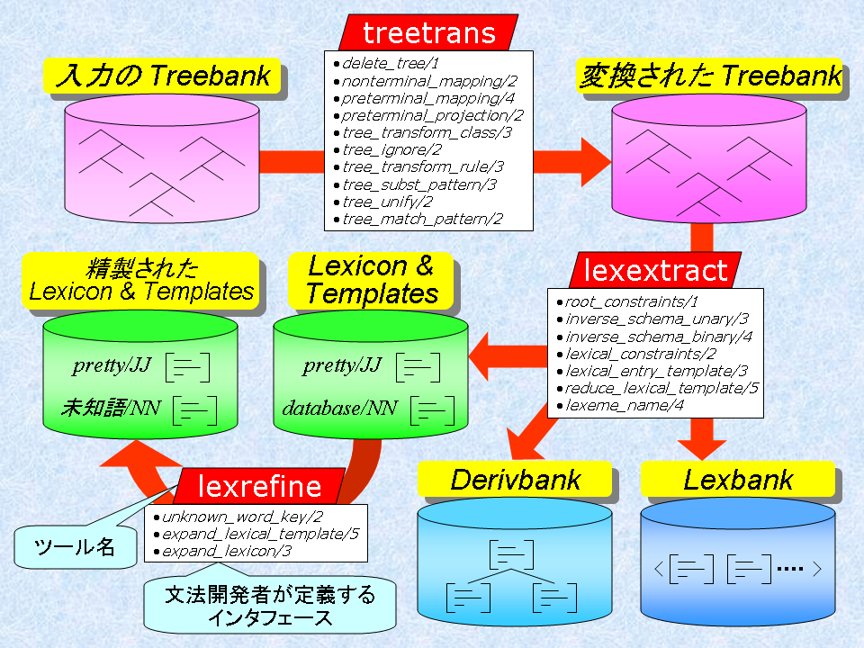

<!doctype html public "-//w3c//dtd html 4.0//en">

<head>
<meta http-equiv="Content-Type" content="text/html; charset=iso-2022-jp">
<link rev="made" href="mailto:yusuke@is.s.u-tokyo.ac.jp">
<link rel="parent" href="index.ja.html">
<link rel="stylesheet" type="text/css" href="style-overview.css">
<title>$BJ8K!3+H/$NN.$l(B</title>
</head>


<body>
<h1>$BJ8K!3+H/$NN.$l(B</h1>

<a href="overview.html">English version</a>

<ul>
  <li><a href="#make_grammar">$BJ8K!$r:n$k(B</a>
  <li><a href="#make_probmodel">$B3NN(%b%G%k$r:n$k(B</a>
</ul>

<h2><a name="make_grammar">$BJ8K!$r:n$k(B</a></h2>

<p>
$BJ8K!$r:n$k$K$O!$(B<a href="treetrans.ja.html"><tt>treetrans</tt></a>, <a
href="lexextract.ja.html"><tt>lexextract</tt></a>, <a
href="lexrefine.ja.html"><tt>lexrefine</tt></a> $B$r;H$$$^$9!%$3$l$i$N%D!<(B
$B%k$r;H$C$?J8K!3+H/$N%W%m%;%9$O!$0J2<$N?^$N$h$&$K$J$j$^$9!%(B

<p>


<ol>
  <li>$BJ8K!3+H/$N86NA$H$J$k(B treebank $B$rMQ0U$9$k!%(B
    <p>$B$^$:!$J8K!3+H/$N%9%?!<%H$K!$86NA$H$J$k(B treebank $B$rMQ0U$7$^$9!%(B
    Penn Treebank $B$N$h$&$K!$(Btrace $B$J$I$N>pJs$,IU2C$5$l$F$$$k$b$N$,:GE,(B
    $B$G$9!%$7$+$7!$$=$N$h$&$J(B treebank $B$,$J$/$F$b!$8e$N%W%m%;%9$K$*$$$F!$(B
    $BMM!9$JIU2C>pJs$r%Q%?!<%s%k!<%k$GDI2C$7$F$$$/$3$H$,$G$-$^$9!%6KC<$J(B
    $BOC!$9=J8>pJs$,$J$$%3!<%Q%9$7$+$J$$;~$O!$(Bshallow parser $B$J$I$r;H$C(B
    $B$F4JC1$J>pJs$r$D$1$?$b$N$+$i%9%?!<%H$7$F$b9=$$$^$;$s!%(B
  <li>$B9=J8LZ$rJQ7A$7$?$j!$IU2C>pJs$r$D$1$k!%(B
    <p><a href="treetrans.ja.html"><tt>treetrans</tt></a>$B%D!<%k$r;H$C$F!$(B
    treebank $B$N9=J8LZ$rJQ7A$7$?$j!$IU2C>pJs$r$D$1$?$j$7$^$9!%9=J8LZ$O(B
    $BAG@-9=B$$GI=$5$l!$JQ7A$N%k!<%k$O!$(Blilfes $B$N%W%m%0%i%`$G5-=R$7$^$9!%(B
    $BJQ49%k!<%k$r4JC1$K=q$/$?$a!$$$$/$D$+$N%$%s%?%U%'!<%9$,Ds6!$5$l$F$$(B
    $B$^$9!%$^$?!$9=J8LZ$r(B2$BJ,LZ2=$7$?$j!$(Bhead $B$r7h$a$k%D!<%k$bDs6!$5$l$F(B
    $B$$$^$9!%(B
  <li>$BJ8K!$rCj=P$9$k!%(B
    <p><a href="lexextract.ja.html"><tt>lexextract</tt></a>$B%D!<%k$r;H$C$F!$(B
    derivbank, lexbank, lexicon, templates $B$rCj=P$7$^$9!%J8K!Cj=P$N%?!<(B
    $B%2%C%H$H$J$kJ8K!M}O@$G5,Dj$5$l$k0lHLE*J8K!5,B'$rDj5A$9$k$3$H$G!$%D!<(B
    $B%k$,(B lexicon $B$r<+F0E*$K:n@.$7$F$/$l$^$9!%(B
    <p>$B$^$:!$(Btreebank $B$+$i(B derivbank $B$r:n@.$9$k$?$a!$5U8~$-$NJ8K!5,B'(B
    ($B%9%-!<%^!$%W%j%s%7%W%k(B)$B$rDj5A$7$^$9!%$=$l$+$i!$(Bderivation $B$N(B 
    terminal $B$NAG@-9=B$$+$i!$(Blexical entry template $B$rCj=P$9$k$?$a$N%$(B
    $B%s%?%U%'!<%9$rDj5A$7$^$9!%$^$?!$5U8~$-$N(B lexical rule $B$rDj5A$9$k$3(B
    $B$H$G!$(Binflection $B$J$I$rCj>]2=$7$?(B lexeme $B$N(B template $B$rCj=P$9$k$3(B
    $B$H$b$G$-$^$9!%(B
  <li>$BJ8K!$r@:@=$9$k!%(B
    <p><a href="lexrefine.ja.html"><tt>lexrefine</tt></a>$B%D!<%k$r;H$C$F!$(B
    lexicon $B$H(B templates $B$r@:@=$7$^$9!%>e$GF@$?(B lexicon, templates $B$O!$(B
    $B9=J8LZJQ49$N%_%9$J$I$K$h$j%4%_$r4^$s$G$$$k2DG=@-$,$"$k$N$G!$IQEY$N(B
    $BDc$$(B template $B$rB-@Z$j$7$?$j$7$FJ8K!$r@:@=$7$^$9!%$^$?!$$b$H$b$H$N(B 
    lexicon $B$OL$CN8e$KBP$9$k<-=q9`L\$,$"$j$^$;$s$,!$$"$kIQEY0J2<$N8l$r(B
    $BL$CN8l$H$_$J$9$3$H$G!$L$CN8l$N<-=q9`L\$r:n@.$9$k$3$H$,$G$-$^$9!%$5(B
    $B$i$K!$$3$3$G(B lexical rule $B$rE,MQ$7$F(B template $B$r$"$i$+$8$a@8@.$7$F(B
    $B$*$/$3$H$b$G$-$^$9!%$3$l$K$h$j!$9=J82r@O;~$K(B lexical rule $B$r(B 
    online $B$GE,MQ$9$kI,MW$,$J$/$J$j$^$9!%(B
</ol>


<h2><a name="make_probmodel">$B3NN(%b%G%k$r:n$k(B</a></h2>

<p>
$B3NN(%b%G%k$r:n$k$K$O!$(B<a
href="unimaker.ja.html"><tt>unimaker</tt></a>, <a
href="forestmaker.ja.html"><tt>forestmaker</tt></a>, <a
href="amisfilter.ja.html"><tt>amisfilter</tt></a>$B!$$*$h$S:GBg%(%s%H%m(B
$B%T!<%b%G%k?dDj4o$N(B<a
href="http://www-tsujii.is.s.u-tokyo.ac.jp/amis/">amis</a> ($B%P!<%8%g%s(B
3.0 $B0J>e(B)$B$r;H$$$^$9!%3NN(%b%G%k$r:n@.$9$kN.$l$O0J2<$N?^$N$h$&$K$J$j$^(B
$B$9!%(B

<p>


<h3>Unigram $B3NN(%b%G%k$r:n$k>l9g(B</h3>

<p>
Unigram $B3NN(%b%G%k$O!$3FC18l$KBP$7$F(B lexical entry $B$r3d$jEv$F$k3NN($N(B
$B%b%G%k$G$9!%C18l$r(B<i>w</i>$B!$(Blexical entry $B$r(B<i>l</i>$B$H$9$k$H!$(B
<i>p(l|w)</i>$B$r5a$a$^$9!%C18l$H(B lexical entry $B$N6&5/>pJs$@$1$r;H$&$N$G!$(B
$B4JC1$K%b%G%k$r:n$k$3$H$,$G$-!$$^$?%Q%i%a%??dDj$b$9$0=*$o$j$^$9!%$7$+$7!$(B
$BJ8K!5,B'E,MQ$N(B preference $B$J$I$O$H$i$($i$l$J$$$?$a!$2r@O@:EY$O$"$^$jNI(B
$B$/$"$j$^$;$s!%%Q!<%6$,@5$7$/F0$$$F$$$k$+$I$&$+$H$j$"$($:;n$9$H$-$d!$<!(B
$B@a$N(B feature forest $B%b%G%k:n@.$N%3%9%H$r>.$5$/$9$k$?$a$K;H$$$^$9!%(B

<p>
Unigram $B%b%G%k$r:n$k$K$O!$(Bmayz/amismodel.lil $B$GDj5A$5$l$F$$$k(B
<tt>extract_lexical_event/4</tt>$B$H!$(B<tt>feature_mask/3</tt>$B$r<BAu$9$k(B
$BI,MW$,$"$j$^$9!%A0<T$O!$C18l$H(B lexical entry $B$+$i!$$=$N%$%Y%s%H$rI=$9(B
$BJ8;zNs%j%9%H$r:n@.$7$^$9!%8e<T$O!$$=$N%$%Y%s%HJ8;zNs$K%^%9%/$r$+$1$k$3(B
$B$H$G!$:GBg%(%s%H%m%T!<%b%G%k$N(B<em>$BAG@-(B</em>$B$r<h$j=P$7$^$9!%(B

<p>
$B$^$:!$(B<tt><a href="unimaker.ja.html">unimaker</a></tt>$B%D!<%k$K$h$j!$%$(B
$B%Y%s%HJ8;zNs$r<h$j=P$7!$=i4|%$%Y%s%H%G!<%?$r:n@.$7$^$9!%<!$K!$(B
<tt><a href="amisfilter.ja.html">amisfilter</a></tt>$B%D!<%k$K$h$j!$%$%Y(B
$B%s%HJ8;zNs$K%^%9%/$r$+$1!$AG@-$r<h$j=P$7!$(Bamis $B7A<0$N%G!<%?%U%!%$%k$r(B
$B@8@.$7$^$9!%:G8e$K!$4{B8$N%D!<%k(B amis $B$rMxMQ$7!$:GBg%(%s%H%m%T!<%b%G%k(B
$B$N%Q%i%a%?$r7W;;$7$^$9!%(B


<h3>Feature forest $B%b%G%k$r:n$k>l9g(B</h3>

Feature forest $B%b%G%k$O!$J8$,M?$($i$l$?;~$K!$$=$N(B derivation $B$N3NN($r(B
$BM?$($k%b%G%k$G$9!%J8$r(B<i>s</i>$B!$$=$N(B derivation $B$r(B<i>d</i>$B$H$9$k$H!$(B
<i>p(d|s)</i>$B$r5a$a$^$9!%3X=,%G!<%?$r:n$k$?$a$K%H%l!<%K%s%0%3!<%Q%9$r(B
$BA4$F%Q!<%:$9$kI,MW$,$"$j!$$^$?%$%Y%s%H%G!<%?$,Hs>o$KBg$-$/$J$k$?$a!$%b(B
$B%G%k:n@=$K$O;~4V$,$+$+$j$^$9!%$7$+$7!$9=J82r@O$K$*$1$kMM!9$JFCD9(B($BJ8K!(B
$B5,B'E,MQ$N(B preference $B$d!$(Bbi-lexical dependency)$B$rAG@-$H$7$F%b%G%k$KAH(B
$B$_F~$l$i$l$k$?$a!$9b@:EY$,4|BT$G$-$^$9!%(B

<p>
Feature forest $B%b%G%k$r:n$k$?$a$K$O!$%H%l!<%K%s%0%3!<%Q%9$N3FJ8$KBP$7(B
$B$F@52r$N9=J82r@O7k2L$H!$$=$NJ8$r2r@O$7$?;~$N(B parse forest $B$,I,MW$K$J$j(B
$B$^$9!%(Bforestmaker $B$O!$(Bderivbank $B$rM?$($k$H!$3FJ8$N(B derivation $B$r@52r9=(B
$BJ82r@O7k2L$KJQ49$7!$$5$i$K3FJ8$r9=J82r@O$7$F(B parse forest $B$r:n$j$^$9!%(B
$B$3$N:n6H$N$?$a$K$O!$J8K!$r;H$C$F9=J82r@O$9$k$?$a$N%$%s%?%U%'!<%9$,<BAu(B
$B$5$l!$<B:]$K9=J82r@O$,$G$-$kI,MW$,$"$j$^$9!%>\$7$/$O!$(B<a
href="usegrammar.ja.html">$BJ8K!$N;H$$J}(B</a>$B$r;2>H$7$F2<$5$$!%(B

<p>
Feature forest $B%b%G%k$r:n$k$K$O!$(Bmayz/amismodel.lil $B$GDj5A$5$l$F$$$k(B
<tt>extract_terminal_event/6</tt>, <tt>extract_unary_event/7</tt>,
<tt>extract_binary_event/8</tt> <tt>extract_root_event/4</tt>, $B$*$h$S(B 
<tt>feature_mask/3</tt> $B$r<BAu$7$^$9!%:G=i$N(B4$B$D$O!$$=$l$>$l!$=*C<%N!<(B
$B%I!$(Bunary schema $B$NE,MQ!$(Bbinary schema $B$NE,MQ!$%k!<%H%N!<%I!$$K$*$1$k(B
$B%$%Y%s%H$rI=$9J8;zNs%j%9%H$r:n@.$7$^$9!%8e<T$O!$(Bunigram $B%b%G%k$HF1MM$K!$(B
$B$=$N%$%Y%s%HJ8;zNs$K%^%9%/$r$+$1$k$3$H$G!$:GBg%(%s%H%m%T!<%b%G%k$NAG@-(B
$B$r<h$j$@$7$^$9!%(B

<p>
$B$^$:!$(B<tt><a href="forestmaker.ja.html">forestmaker</a></tt>$B%D!<%k$K$h(B
$B$j!$%$%Y%s%H$r<h$j$@$7!$=i4|%$%Y%s%H%G!<%?$r:n@.$7$^$9!%8e$O(B unigram 
$B%b%G%k$HF1$8$G!$(B<tt><a href="amisfilter.ja.html">amisfilter</a></tt>$B$G(B
amis $BMQ%G!<%?%U%!%$%k$r:n$j!$:G8e$K(B<a
href="http://www-tsujii.is.s.u-tokyo.ac.jp/amis/">amis</a> $B$G%b%G%k%Q(B
$B%i%a!<%?$r?dDj$7$^$9!%(B

<p>
Feature forest $B%b%G%k$r:n$k$H$-$K!$$h$j4JC1$J%b%G%k(B($B$?$H$($P!$(Bunigram 
$B%b%G%k(B)$B$r(B reference distribution $B$H$7$FMQ$$$k$3$H$,$G$-$^$9!%(B
<tt>reference_prob_terminal/5</tt>, <tt>reference_prob_unary/6</tt>,
<tt>reference_prob_binary/7</tt>, <tt>reference_prob_root/3</tt> $B$r<BAu$9(B
$B$k$H!$$=$l$>$l=*C<%N!<%I!$(Bunary schema $B$NE,MQ!$(Bbinary schema $B$NE,MQ!$(B
$B%k!<%H%N!<%I!$$K$*$1$k(Breference probability distribution $B$rM?$($k$3$H(B
$B$,$G$-$^$9!%(B


<hr>
<a href="index.ja.html">MAYZ$B%D!<%k%-%C%H%^%K%e%"%k(B</a>
<a href="http://www-tsujii.is.s.u-tokyo.ac.jp/mayz/">MAYZ$B%[!<%`%Z!<%8(B</a>
<a href="http://www-tsujii.is.s.u-tokyo.ac.jp/">$BDT0f8&5f<<(B</a>

<hr>
<a href="mailto:yusuke@is.s.u-tokyo.ac.jp">
<address>MIYAO Yusuke (yusuke@is.s.u-tokyo.ac.jp)</address>
</a>
</body>

